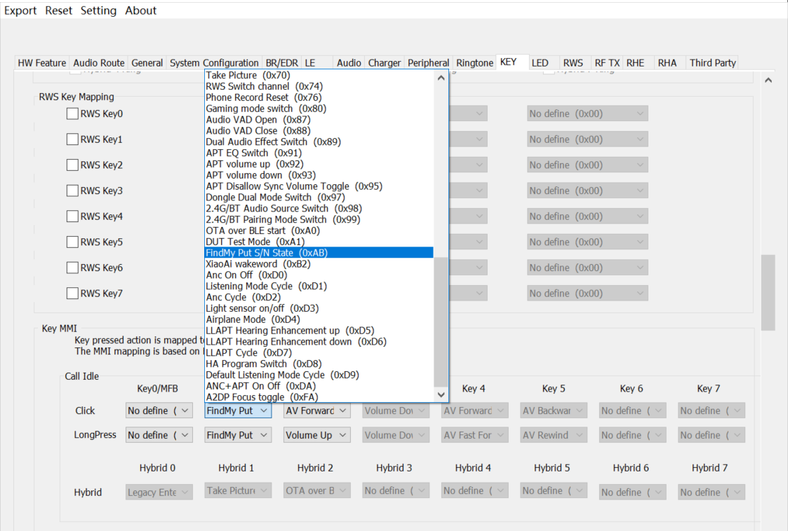

FINDMY Application Note
V1.0.0.1
2022/12/12
Revision History
| Version | Date | Description |
| V1.0.0.1 | 2022/12/12 | Stable Release |
Contents
Table List
Figure List
Glossary
| Terms | Definitions |
| FMNA | Find My Network Accessory |
1 Introduction
The purpose of this document is to give an overview of the findmy module for customer. The document describes how to enable findmy feature, use findmy module in app project, test findmy function.
1.1 Find My
Find My is an application technology released by Apple. The magic of this technology is that the peripheral products that support this technology (such as AirTag) can use the Apple devices around it (iPhone, iPad, AirPods, AirTag, etc.) to help it locate even if they do not have a GPS module. Please refer to https://www.apple.com/icloud/find-my/ for specific functions.
1.2 Find My app
The Find My app is where you locate your Apple devices, share your location with friends and family,and locate Find My network-enabled accessories. The app displays the location of findable items and includes additional features to protect your devices, such as playing sound and using Lost Mode.
1.3 Transport
The Find My network accessory protocol uses Bluetooth Low Energy (LE) as the primary transport to interact with Apple devices.
1.4 Roles
It includes the following four roles: Owner device, Accessory, Find My network and Apple server. The relationship between the four roles is shown in the following figure:
Figure 1-1 Different roles in the Find My network
2 Feature enable
2.1 Add findmy file
Copy crypto source files to the path of sdk.
Figure 2-1 Crypto file path
2.2 Findmy keil configuration
Add crypto source file to target.
Figure 2-2 Add crypto file in keil
2.3 Findmy macro configuration
F_APP_FINDMY_FEATURE_SUPPORT is a macro for FINDMY. Please enable it in app_flags.h
#define AMA_FEATURE_SUPPORT 0
#define BISTO_FEATURE_SUPPORT 0
#define GFPS_FEATURE_SUPPORT 0
#define F_APP_TUYA_SUPPORT 0
#define F_APP_BLE_SWIFT_PAIR_SUPPORT 0
#define F_APP_TEAMS_FEATURE_SUPPORT 0
#define XM_XIAOAI_FEATURE_SUPPORT 0
#define F_APP_XIAOWEI_FEATURE_SUPPORT 0
#define F_APP_FINDMY_FEATURE_SUPPORT 1
2.4 Configuration of MCU Config Tool
To use Findmy, The BLE test usage option needed to be checked. The LE link number and le slave link number configuration are as follows:
Figure 2-3 Findmy LE config
In order to pass "Get Serial Number" test, the "FindMy Put S/N State" function to adjust serial number state needs to be mapped to a key on the page of KEY (Figure 2-4).

Figure 2-4 Config key of findmy serial number
3 Bluetooth Requirements
Bluetooth Low Energy (LE) is used as the wireless transport for all communication between Apple products and accessories.
3.1 Bluetooth connection
The accessory must support at least two simultaneous connections in a peripheral role.
#define APP_FINDMY_MAX_LINKS 2
3.2 Accessory information service
The Accessory information service UUID:
#define AIS_SERVICE_BASE_UUID {0x8B, 0x47, 0x38, 0xDC, 0xB9, 0x11, 0xA9, 0xA1, 0xB1, 0x43, 0x51, 0x3C, 0x02, 0x01, 0x29, 0x87}
The UUID for Accessory information service characteristics is 6AA5XXXX-6352-4D57- A7B4-003A416FBB0B, where XXXX is unique for each characteristic.
#define GATT_UUID128_PROD_DATA 0x0B, 0xBB, 0x6F, 0x41, 0x3A, 0x00, 0xB4, 0xA7, 0x57, 0x4D, 0x52, 0x63, 0x01, 0x00, 0xA5, 0x6A
#define GATT_UUID128_MANU_NAME 0x0B, 0xBB, 0x6F, 0x41, 0x3A, 0x00, 0xB4, 0xA7, 0x57, 0x4D, 0x52, 0x63, 0x02, 0x00, 0xA5, 0x6A
#define GATT_UUID128_MODEL_NAME 0x0B, 0xBB, 0x6F, 0x41, 0x3A, 0x00, 0xB4, 0xA7, 0x57, 0x4D, 0x52, 0x63, 0x03, 0x00, 0xA5, 0x6A
#define GATT_UUID128_RESERVED 0x0B, 0xBB, 0x6F, 0x41, 0x3A, 0x00, 0xB4, 0xA7, 0x57, 0x4D, 0x52, 0x63, 0x04, 0x00, 0xA5, 0x6A
#define GATT_UUID128_ACC_CATEGORY 0x0B, 0xBB, 0x6F, 0x41, 0x3A, 0x00, 0xB4, 0xA7, 0x57, 0x4D, 0x52, 0x63, 0x05, 0x00, 0xA5, 0x6A
#define GATT_UUID128_ACC_CAP 0x0B, 0xBB, 0x6F, 0x41, 0x3A, 0x00, 0xB4, 0xA7, 0x57, 0x4D, 0x52, 0x63, 0x06, 0x00, 0xA5, 0x6A
#define GATT_UUID128_FW_VERS 0x0B, 0xBB, 0x6F, 0x41, 0x3A, 0x00, 0xB4, 0xA7, 0x57, 0x4D, 0x52, 0x63, 0x07, 0x00, 0xA5, 0x6A
#define GATT_UUID128_FINDMY_VERS 0x0B, 0xBB, 0x6F, 0x41, 0x3A, 0x00, 0xB4, 0xA7, 0x57, 0x4D, 0x52, 0x63, 0x08, 0x00, 0xA5, 0x6A
#define GATT_UUID128_BATT_TYPE 0x0B, 0xBB, 0x6F, 0x41, 0x3A, 0x00, 0xB4, 0xA7, 0x57, 0x4D, 0x52, 0x63, 0x09, 0x00, 0xA5, 0x6A
#define GATT_UUID128_BATT_LVL 0x0B, 0xBB, 0x6F, 0x41, 0x3A, 0x00, 0xB4, 0xA7, 0x57, 0x4D, 0x52, 0x63, 0x0A, 0x00, 0xA5, 0x6A
Get characteristic data through the following interface:
uint16_t attrib_index, uint16_t offset, uint16_t *p_length, uint8_t **pp_value)
3.3 Find My network service
The Find My network service UUID is
#define FINDMY_UUID_SERVICE 0xFD44
The UUID for Find My network service characteristics is 4F86XXXX-943B-49EF-BED4-2F730304427A, where XXXX is unique for each characteristic.
#define GATT_UUID128_PAIR_CTRL_POINT 0x7A, 0x42, 0x04, 0x03, 0x73, 0x2F, 0xD4, 0xBE, 0xEF, 0x49, 0x3B, 0x94, 0x01, 0x00, 0x86, 0x4F
#define GATT_UUID128_CONF_CTRL_POINT 0x7A, 0x42, 0x04, 0x03, 0x73, 0x2F, 0xD4, 0xBE, 0xEF, 0x49, 0x3B, 0x94, 0x02, 0x00, 0x86, 0x4F
#define GATT_UUID128_NON_OWNER_CTRL_POINT 0x7A, 0x42, 0x04, 0x03, 0x73, 0x2F, 0xD4, 0xBE, 0xEF, 0x49, 0x3B, 0x94, 0x03, 0x00, 0x86, 0x4F
#define GATT_UUID128_PAIRED_OWNER_INFO_CTRL_POINT 0x7A, 0x42, 0x04, 0x03, 0x73, 0x2F, 0xD4, 0xBE, 0xEF, 0x49, 0x3B, 0x94, 0x04, 0x00, 0x86, 0x4F
#define GATT_UUID128_DEBUG_CTRL_POINT 0x7A, 0x42, 0x04, 0x03, 0x73, 0x2F, 0xD4, 0xBE, 0xEF, 0x49, 0x3B, 0x94, 0x05, 0x00, 0x86, 0x4F
set and update characteristic data through the following interface:
uint16_t attrib_index,
T_WRITE_TYPE write_type, uint16_t length, uint8_t *p_value,
void fns_cccd_update_cb(uint8_t conn_id,
T_SERVER_ID service_id, uint16_t index,
uint16_t cccbits)
4 Bluetooth LE advertising
4.1 Payload for pairing
An accessory that is not Find My network paired shall advertise the Find My network service as a primary service when the user puts the accessory in pairing mode. The Bluetooth LE payload for pairing is:
static uint8_t pairing_adv_data[29] =
{
0x18,
};
To initialize pairing data, can use api.
void fmna_adv_init_pairing(void)
{
fmna_pairing_adv_service_data_init();
fmna_adv_platform_init_pairing((uint8_t *)&m_fmna_pairing_adv_payload,
sizeof(m_fmna_pairing_adv_payload));
}
4.2 Payload for nearby state
After Find My network pairing, the accessory shall advertise the Find My network Bluetooth LE payload for nearby state. Payload for nearby state defined in:
static uint8_t nearby_adv_data[31] =
{
0x03,
0xFF,
0x4C, 0x00,
};
To initialize nearby data, can use api.
void fmna_adv_init_nearby(uint8_t pubkey[FMNA_PUBKEY_BLEN])
{
fmna_nearby_adv_manuf_data_init(pubkey);
fmna_adv_platform_init_nearby((uint8_t *)&m_fmna_nearby_adv_packet,
sizeof(m_fmna_nearby_adv_packet));
FMNA_LOG_INFO("NADV data %d", sizeof(m_fmna_nearby_adv_packet));
FMNA_LOG_HEXDUMP_DEBUG((uint8_t *)&m_fmna_nearby_adv_packet,
sizeof(m_fmna_nearby_adv_packet));
}
4.3 Payload for separated state
When the accessory is in the separated state, the accessory shall advertise the Find My network BLE payload for separated state.
static uint8_t separate_adv_data[31] =
{
0x03,
0xFF,
0x4C, 0x00,
};
To initialize separated data, can use api.
void fmna_adv_platform_init_separated(uint8_t *separated_adv_manuf_data,
size_t separated_adv_manuf_data_size)
{
fmna_fast_adv_interval = fmna_separated_adv_fast_intv;
fmna_slow_adv_interval = fmna_separated_adv_slow_intv;
memcpy(separate_adv_data + MANU_DATA_OFFSET, separated_adv_manuf_data,
separated_adv_manuf_data_size);
separate_adv_data[0] = 3 + separated_adv_manuf_data_size;
(uint8_t *)separate_adv_data);
FMNA_LOG_INFO("ADV Separate len %d", 3 + separated_adv_manuf_data_size + 1);
FMNA_LOG_HEXDUMP_INFO(separate_adv_data, 31);
}
5 Findmy pairing
An accessory must be paired to an owner device before it can be locatable.An owner device will initiate the standard Bluetooth LE encryption before it accesses the Find My network services.
5.1 Findmy pairing mode
Accessories automatically enter pairing mode after power on.To enter pairing mode,can also use api.
void app_findmy_enter_pair_mode(void)
{
{
start_pair_adv();
}
}
5.2 Generate pairing data
The Send_pairing_data opcode must be used by the accessory to respond to a pairing session request. The accessory must respond in 60 seconds.
typedef struct
{
uint8_t c1[C1_BLEN];
uint8_t e2[E2_BLEN];
Generate C1 use api.
Generate E2 use api.
static void populate_e2_generation_encryption_msg(void)
5.3 Send pairing data
The accessory must send encrypted payload generated using Apple server encryption key (Q_E).
fmna_ret_code_t fmna_crypto_generate_send_pairing_data_params(void)
5.4 Finalize pairing
The owner device initiates the finalize pairing process to complete pairing.
fmna_ret_code_t fmna_crypto_generate_send_pairing_data_params(void)
5.5 Findmy connected
The accessory will enable advertising after power on. Users could find the accessory in 'Find My' by clicking the button 'Other Supported Item' (Figure 5-1). Connect the Realtek Reference Implementation (Figure 5-2) and choose an Emoji (Figure 5-3). Click the 'Agree' button and the accessory will be Connected (Figure 5-4).
Figure 5-1 Add new item
Figure 5-2 Connect accessory
Figure 5-3 Choose emoji
Figure 5-4 Agree connect
6 Sound
Play sound requirements are applicable only for accessories that include a sound maker.
typedef enum
{
FMNA_SERVICE_OPCODE_SOUND_START = 0x0200,
FMNA_SERVICE_OPCODE_SOUND_STOP = 0x0201,
FMNA_SERVICE_OPCODE_SOUND_COMPLETED = 0x020D,
} FMNA_Service_Opcode_t;
6.1 Start sound
clicking the button 'Play Sound' after the accessory connected(Figure 6-1).
Figure 6-1 Play sound
The Sound_Start opcode is used to play "TONE_PLAY_SOUND" tone on the sound maker of the accessory.
case FMNA_SERVICE_OPCODE_SOUND_START:
{
FMNA_LOG_INFO("RX Sound Start");
if (fmna_connection_is_status_bit_enabled(CONN_HANDLE_ALL, FMNA_MULTI_STATUS_PLAYING_SOUND))
{
FMNA_LOG_ERROR("Sound session already in progress");
response_status = RESPONSE_STATUS_INVALID_STATE;
}
else
{
fmna_connection_update_connection_info(conn_handle, FMNA_MULTI_STATUS_PLAYING_SOUND, true);
response_status = RESPONSE_STATUS_SUCCESS;
fmna_state_machine_dispatch_event(FMNA_SM_EVENT_SOUND_START);
}
} break;
If no operation, the sound will stop after ten seconds.
void fmna_sound_platform_start(void)
{
ret_code_t ret_code = app_timer_start(m_fmna_sound_timeout_timer_id,
MSEC_TO_TIMER_TICKS(SEC_TO_MSEC(10)),
APP_ERROR_CHECK(ret_code);
}
6.2 Stop sound
clicking the button 'Stop Sound' when play sound(Figure 6-2).
Figure 6-2 Stop sound
The Sound_Stop opcode is used to stop an ongoing sound request.
case FMNA_SERVICE_OPCODE_SOUND_STOP:
{
FMNA_LOG_INFO("RX Sound Stop");
if (!fmna_connection_is_status_bit_enabled(CONN_HANDLE_ALL, FMNA_MULTI_STATUS_PLAYING_SOUND))
{
FMNA_LOG_WARNING("No sound session in progress");
response_status = RESPONSE_STATUS_INVALID_STATE;
}
else
{
fmna_state_machine_dispatch_event(FMNA_SM_EVENT_SOUND_STOP);
}
} break;
Then the accessory will be "FMNA_SM_EVENT_SOUND_COMPLETE" state.
void fmna_sound_platform_stop(void)
{
ret_code_t ret_code = app_timer_stop(m_fmna_sound_timeout_timer_id);
APP_ERROR_CHECK(ret_code);
fmna_state_machine_dispatch_event(FMNA_SM_EVENT_SOUND_COMPLETE);
}
6.3 Complete sound
The accessory shall confirm the completion of the stop sound procedure by sending the Sound_Completed message.
uint32_t fmna_generic_evt_sound_complete_handler(FMNA_SM_Event_t fmna_evt, void *p_context)
{
uint16_t sound_conn_handle = fmna_connection_get_conn_handle_with_multi_status_enabled(
FMNA_MULTI_STATUS_PLAYING_SOUND);
if (sound_conn_handle == CONN_HANDLE_INVALID)
{
FMNA_LOG_INFO("Sound initiator no longer connected");
return FMNA_SM_STATUS_SUCCESS;
}
if (fmna_connection_is_status_bit_enabled(sound_conn_handle, FMNA_MULTI_STATUS_ENCRYPTED))
{
fmna_gatt_send_indication(sound_conn_handle, FMNA_SERVICE_OPCODE_SOUND_COMPLETED,
NULL, 0);
}
else
{
fmna_gatt_send_indication(sound_conn_handle, FMNA_SERVICE_NON_OWNER_OPCODE_SOUND_COMPLETED,
NULL,
0);
}
fmna_connection_update_connection_info_all(FMNA_MULTI_STATUS_PLAYING_SOUND, false);
return FMNA_SM_STATUS_SUCCESS;
}